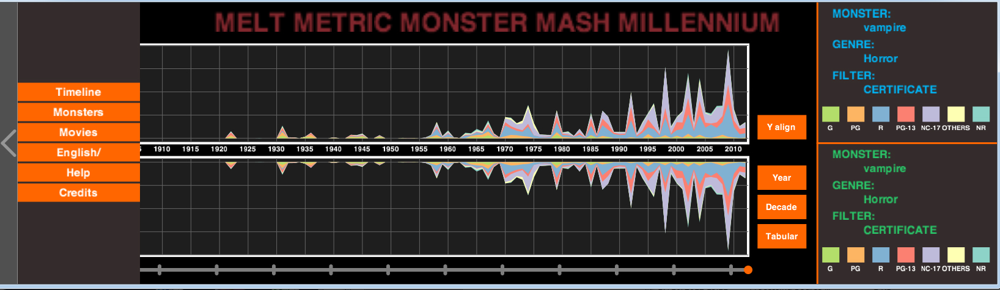
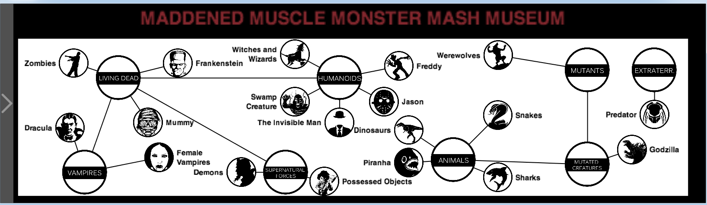
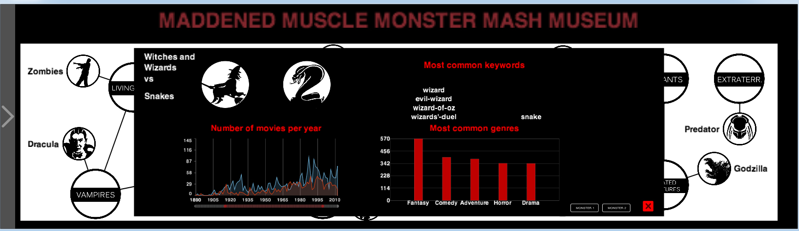
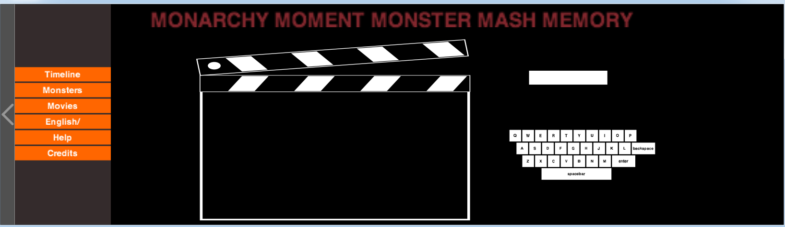

How to use the application:
Timeline tab

- Click on the arrow on the left to show/hide the menu
- Use the filters on the right to filter data by monster, genre,budget, quality, format, popularity,country, certificate
- Use ‘Y align’ button to adjust the y axis
- Use ‘Decade’ button to cluster by decade and ‘Year’ button to go back to non-clustered mode.
- Use ‘Tabular’ button to see the numeric data
- Click on the timeline to see the top10 monsters of a particular decade, the top 10 monsters ever and events.
Monster tab

- You can click on the monsters and drag them around to understand their relationships
- Click on a monster without dragging to see information about it
- Click on monster2 button to compare it with another monster.

MovieTab

- Use the onscreen keyboard to search for a movie, click on the suggestions and the information about the movie will appear
Other useful stuff
- Use the ‘english/chinese’ button to switch between the two languages
- Click on the credit button to see the credits of the application
- Click on the help button to discover how to use the application